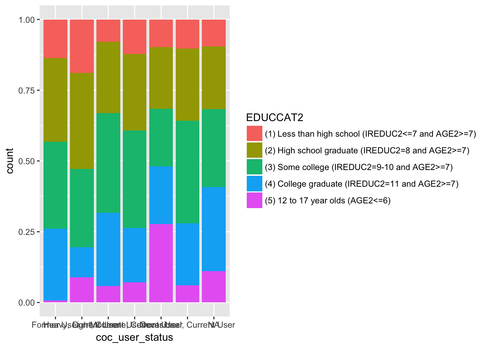
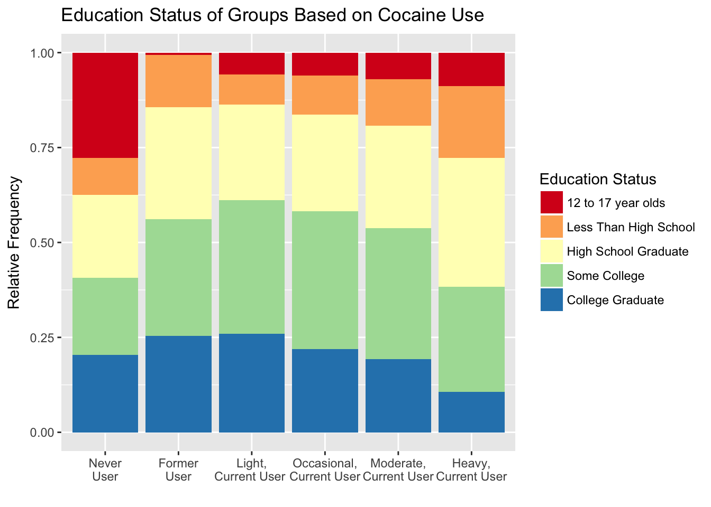

In this exercise, we address the question, “How do education levels differ in groups with different cocaine usage?”
In this document we will:
* Load the data * Define different levels of cocaine usage * Create a new variable based on cocaine usage * Present a graph that can be clearly understood that addresses the question of interest
To address this question, we will use data from the 2014 National Survey on Drug Use and Health, which is conducted annually by the Substance Abuse and Mental Health Services Administration (SAMHSA), an agency in the U.S. Department of Health and Human Services (DHHS). More information about this survey can be found at ICPSR’s data archive page. The data has been prepared into a .Rdata file, so we can simply load it in the workspace with the load() command. We will also load the packages that we need – tidyverse and forcats.
The data object has a somewhat unpleasant name so we will copy it into full_data and delete the original object.
First we will add a variable to the full_data called coc_user_status. We will set this variable to “Never User” if a person has answered “No” to the question “Have you ever used cocaine?” as coded by the variable COCEVER. Then we split up the current and former users. We define a former user as someone who has used cocaine at least once, but not in the past 12 months. We use the variable COCREC to determine if someone is a “Former User” or a “Current User”.
The table at the end confirms that anyone who answers “Yes” to having used cocaine is coded as a Current or Former User. It also confirms that current users are people who have used cocaine in the past 12 months. There are 23 NA values in the last row of the table because 12 people refused to answer and 11 people left the question blank.
# A tibble: 9 x 4
COCEVER coc_user_status COCREC n
<fct> <chr> <fct> <int>
1 (1) Yes Current User (01) Within the past 30 days 336
2 (1) Yes Current User (02) More than 30 days ago but within the… 735
3 (1) Yes Current User (08) Used at some point in the past 12 mo… 15
4 (1) Yes Current User (11) Used in the past 30 days LOGICALLY A… 19
5 (1) Yes Current User (12) Used >30 days ago but within pst 12 … 12
6 (1) Yes Former User (03) More than 12 months ago 5461
7 (1) Yes Former User (09) Used at some point in the lifetime L… 52
8 (2) No Never User <NA> 48618
9 <NA> <NA> <NA> 23Then we decided to create a variable, coc_year_use to provide more information on the current users and how frequently they use cocaine. We decided to create four groups and separate cocaine users based on quartiles. “Light, Current Users” fall in the first quartile, “Occasional, Current Users” fall in the second quartile, “Moderate, Current Users” fall in the third quartile, and “Heavy, Current Users” fall in the fourth quartile. The the days for quartiles were determined using the quantile() function and the data was separated with the cut() function.
0% 25% 50% 75% 100%
1 2 5 29 365 Then I use the coc_year_use variable to replase the coc_user_status variable for Current Users. It provides more specific information on the current users. This is accomplished in two steps. The first step finds when coc_user_status is “Curren User” and replaces “Current User” with the index of the coc_year_use, as shown by the results of the count function. The next step replaces the numbers with the proper labels.
# A tibble: 7 x 3
coc_year_use coc_user_status n
<fct> <chr> <int>
1 Light 1 139
2 Occasional 2 232
3 Moderate 3 255
4 Heavy 4 271
5 <NA> Former User 5513
6 <NA> Never User 48618
7 <NA> <NA> 243Finally I have combined enough data to create a rough graph of the cocain user status with the coloring indicating the education level. 
The labels on the x-axis are out of order so I make the variable coc_user_status a factor. Then I use the function fct_relevel() to change the order of the levels in coc_user_status so that the graph will make more sense
The levels in education status also seem out of order as the labels go from less than high school to college and then back to 12 to 17 year olds. So I used the fct_relevel() function to relevel them. I also renamed the levels in EDUCCAT2 as the names were somewhat confusing and linked to other variables in the survey.
[1] "(1) Less than high school (IREDUC2<=7 and AGE2>=7)"
[2] "(2) High school graduate (IREDUC2=8 and AGE2>=7)"
[3] "(3) Some college (IREDUC2=9-10 and AGE2>=7)"
[4] "(4) College graduate (IREDUC2=11 and AGE2>=7)"
[5] "(5) 12 to 17 year olds (AGE2<=6)" In my final graph I also changed the colors and the labels so that it is easy to understand.

In order to verify that the above graph is correct, I performed the following calculations. These calculations show the percentages of education statuses in each of the cocaine status groups. The tables for each cocaine usage group with the percentage of the people falling in each education status match the proportions shown on the graph.
A larger proportion (~28%) of never users are 12 to 17 year olds whereas this group is barely present (~0.6%) in the former users category. College graduates composed a similar proportion of the former user group (~25.4%) and the light current user group (~25.9%). Additionally, college graduates composed similar proportions of the occasional, current user group (~21.9%) and the moderate, current user group (~19.2%). Similarly, those with some college education consist in the largest proportion in the Light, Current User Group (~35%) and the Occasional, Current User Group (~36%). 12 to 17 year olds exist in the highest proportion in the Never User group, but they exist in the second highest proportion in the Heavy, Current User Group (~9%). Addtionally, those with less than a high school education or a high school degree exist in the highest proportions in the Heavy, Current User Group.
The group that has never used cocaine consists of the highest proportion of 12 to 17 year olds as they may never have been exposed to cocaine. Similarly, the 12 to 17 year olds have the smallest proportion in the former usage group as they are likely too young to have been exposed and tried it and then have stopped using it. College Graduates are have the largest proportions in Former User and Light, Current User. Indicating that using cocaine in the past and between 1 and 2 days a year (light, current usage), is not contraindicative to graduating college. Additionally, those with some college also have consist in the largest proportion in the Light, Current User (~35%) and the Occasional, Current User (~36%) groups. Those with a High School Education and a less than High School Education exist in the highest proportions in the Heavy, Current User Group. This would indicate that some light or occasional cocaine usage is not uncommon among those receiving or working towards receiving a college degree but excessive usage is associated with a lower education status.
The display shows the distributions of the different education statuses based on cocaine usage patterns. It allows for comparisions based on the relative proportions between the groups and shows how the education levels differ between the groups based on cocaine habits. Showing the data based on frequency is not perfect but the number of “Never Users” is much greater than the number of cocaine users, which is why I selected to show education satus within each cocaine usage group. I would also be interested in looking at drug habits in individuals who use cocaine and the job types of people with different cocaine usage patterns.